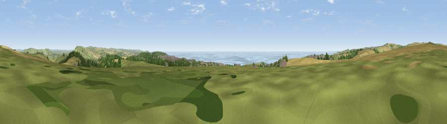

Viewpoint near Telscombe
#4422 in England · top 20% of its area beats it · near TelscombeWhere it is
The exact computed spot (TQ 39838 03225). Click the marker for map links.
The view, rendered

A 360° render of this exact spot computed from the terrain model, tree cover and land cover — summer colours, afternoon light, calibrated against photographs of famous viewpoints. Real trees, hedges and buildings will differ in detail.
The panorama
Grey silhouette: terrain skyline in each direction (720 bearings, Earth curvature and refraction included). Dashed green: skyline with trees (+15 m) and buildings (+8 m) as obstacles. Blue strip: how far the ground is visible on each bearing.
Where the view opens
Wedge length = distance to the farthest visible ground on that bearing (vegetation-aware). Rings at 10, 25 and 50 km.
What fills the view
33% grassland · 30% water · 23% cropland · 7% woodland · 6% built-up
Angular shares of the visible panorama (visual magnitude), not map area. Landscape diversity 0.62 (0–1 Shannon).
Key numbers
More beautiful places nearby
The staircase of upgrades: each row has a higher view potential than everything closer. Driving times are estimates from straight-line distance, calibrated against real road routing — check an actual route before setting out.
| Place | Direction | Drive | Score |
|---|---|---|---|
| Viewpoint near Telscombe | NNW · 0 km | ~2 min | 73.6 |
| Viewpoint near Iford | N · 3 km | ~7 min | 79.4 |
| Viewpoint near Iford | N · 3 km | ~8 min | 80.7 |
| Viewpoint near Southease | ENE · 5 km | ~11 min | 80.8 |
| Viewpoint near Firle | ENE · 6 km | ~13 min | 81.4 |
| Viewpoint near Firle | ENE · 7 km | ~14 min | 83.8 |
| Viewpoint near Firle | ENE · 8 km | ~17 min | 85.4 |
| Firle Beacon | ENE · 9 km | ~18 min | 88.9 |
50.81170, -0.01652 · source: screening · position refined by local search. Computed location — check access rights before visiting.